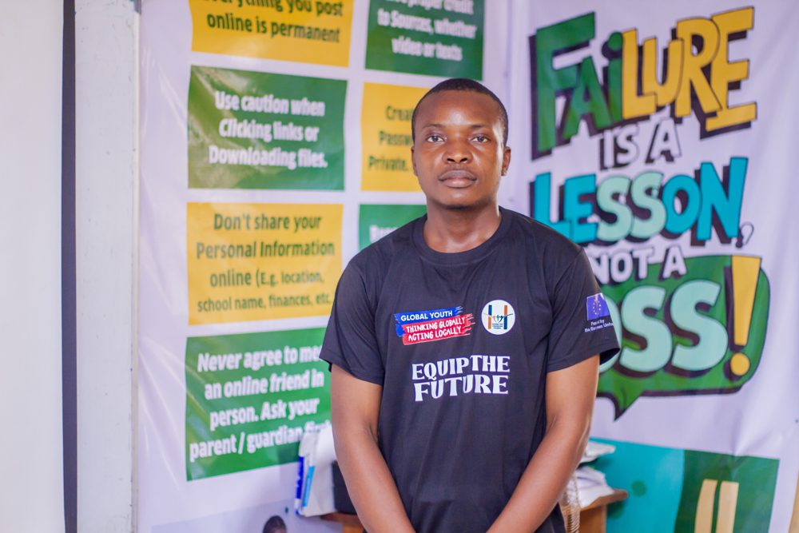

The distance between what Nigerian law promises and what Nigerian institutions deliver, one specific gap each week. Written in Uyo by Obongodu Paul Unanam and published every Thursday.
For editors and researchersPublished workCommissions and contact
Issue 022 Thursday 15 October 2026
The EFCC wrote its report on Atiku Abubakar in 2006, while he still had immunity. The immunity ended in May 2007. Nobody charged him, and nobody decided not to. On Monday a former lawmaker spent six hours at the commission's headquarters adopting a petition about that report. By Wednesday the commission said it had opened an investigation. For nineteen years, no rule required anyone to close the file.
Journal of Arts and Sociological Research, September 2026
Nigeria's 2026 Electoral Act tightened campaign finance rules but barely touched the money behind party primaries, nomination fees and consensus arrangements, and those are the processes that decide who reaches the ballot at all. The article maps that disclosure gap against the 2026/2027 primary cycle and argues that closing it needs INEC to use its regulatory powers and civil society to keep litigating. Written with Godwin Agaba Ochube and Umar Yakubu of the University of Uyo. Peer reviewed and open access, Vol. 13(6).
D+C Development and Cooperation, September 2026
Protecting the People Who Know Where the Money Went
Anti corruption agencies depend on insiders coming forward, and Nigeria still has no law protecting those insiders from retaliation. The piece argues that development programmes which measure anti corruption progress by institutional capacity alone miss the thing that decides whether those institutions hear anything at all.
Journal du Droit Transnational, August 2026
In 2020 the ECOWAS Community Court ordered Nigeria to repeal a provision of its Cybercrime Act for violating free expression. Nigeria took four years to act, and the provision was used to arrest journalists and critics in the meantime. The piece uses that delay to ask why West Africa's regional courts have no way to make a member state comply by any particular deadline.
Africa Is a Country, August 2026
The Prosecutions That Never Happen
The EFCC announces thousands of convictions a year, yet Human Rights Watch found only four against nationally prominent political figures in the agency's whole history. The piece traces that gap to the EFCC's founding statute, which gives the president appointment and removal power over the agency meant to hold his office accountable.
SCC Times, SCC Online Blog, July 2026
When Anti-Corruption Agencies Answer to the Executive: Nigeria, India, and the Independence Problem
Nigeria's EFCC and India's CBI are two of the most visible anti corruption agencies in the Global South, and both answer to the executive that appoints their leadership. The piece argues that a busy enforcement record and real independence are different things, and that neither country has built the second.
Corporate Compliance Insights, July 2026
Your Whistleblower Hotline Does Not Work the Same Way in Nigeria
Most multinationals run one internal reporting system across every country they operate in. The piece explains why that assumption fails in Nigeria, where whistleblowers have no statutory protection.
IntLawGrrls, June 2026
UNCAC Article 33 and the Absent Obligation
Article 33 of UNCAC only asks states to consider protecting whistleblowers. It never requires them to pass a law. The piece argues that the gap left by that soft wording is not gender neutral.
Global Policy Journal, University of Durham, June 2026
When the Extraterritorial Enforcer Steps Back: West Africa
Outside pressure has long driven anti corruption compliance in West Africa. The piece asks what happens to enforcement when that pressure withdraws, and which regional institutions step into the space.
International Law Blog, June 2026
In 2006 Nigeria ratified a convention that requires statutory whistleblower protection. Three bills have died in committee since 2001. The piece argues that two decades of inaction now amount to a breach of a binding treaty obligation.
TheCable, May 2026
Government Built a Whistleblowing Portal But Forgot to Enact Laws to Make Whistleblowing Safe
Nigeria's federal whistleblowing policy has no statutory force, so no Nigerian court can enforce it. The piece follows a former civil servant who used the government's own reporting channel and spent the next year losing his job, facing criminal charges and having police sent to his home.
BAC Afrocentric Story Contest, first place, 2026
A story about what it costs to become the person you were told you would be, and what you carry long after the ceremony.
Dear Aliens Writing Contest, third place, 2026
What We Do When the Light Goes Out
The contest asked what single document you would send to arriving extraterrestrials. This one is about generators, Nigeria, and the talent for filling the space between what you have and what you need.
I graduated from the University of Uyo Faculty of Law in 2025. My dissertation examined Nigeria's anti corruption legal framework, and I came out of it with a question I still have not put down. Why does enforcement fail so often when the law on paper says it should work?
Most of my research sits where anti corruption institutional design, UNCAC implementation and whistleblower protection meet. I am particularly interested in how the African human rights system treats people who report wrongdoing. So far, not well. Nearly everything I publish is the long version of that answer.
I also write fiction and personal essays. They usually start somewhere small, a generator or a government form, and end up at the same gap this newsletter covers.
I have not yet been called to the bar, so what I publish is legal and policy analysis, not legal advice. During my studies I interned at the Akwa Ibom State Ministry of Justice, Nwoko and Co, Access Law House and Humanity Voice Foundation. I am now an intern on Blocklaw Consulting's blockchain and digital assets law programme.
Anti corruption institutional design. The distance between how the EFCC and ICPC are built on paper and how they work in practice, and what a redesign would need to close it.
Whistleblower protection. Why the AUCPCC obligation to legislate protection has gone unmet for nearly twenty years, and what the African human rights system could do about it.
Asset recovery. Where POCA, UNCAC and international cooperation agreements stop working in practice, and what happens to the money after a recovery is announced.
Governance transparency. How information gets from public institutions to the people they serve, and where it stops.
I take on legal commentary, policy writing, editorial commissions and research collaboration, especially anything on anti corruption law or governance accountability in West Africa. Send as much detail on scope and timeline as you can.
You are welcome to cite my work with attribution. For republishing, syndication or translation, write to me and we can agree terms.
